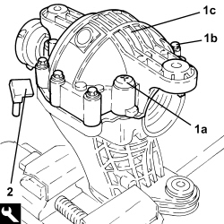
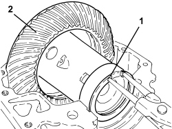
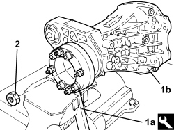
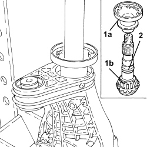
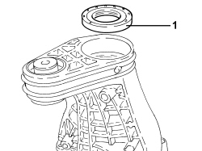
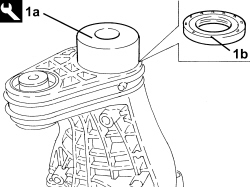
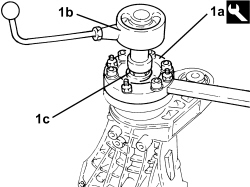
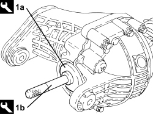
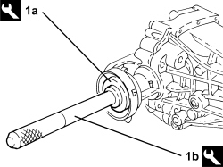

2720C20 PINION OIL SEAL ON DIFFERENTIAL UNIT CASING - R.R. WITH CASING REMOVED
- Path
- Procedures > 27 AXLE > 2720 REAR AXLE CASING -SEMISHAFT AND DIFFERENTIAL > 2720C REAR DIFFERENTIAL UNIT > 2720C20 PINION OIL SEAL ON DIFFERENTIAL UNIT CASING - R.R. WITH CASING REMOVED
- Kind
- repair procedure (removal / refitting; the operation number is the code)
- Applies to
- engines: 3.2 JTS; all production periods
- Interactive page
- https://sloeber94.github.io/elrnDB-aBrrSpdr/en/#/946002103
Applies to: engines: 3.2 JTS; all production periods
 Removing
Removing
 Refitting
Refitting1. Place the rear differential in a vice fitted with protective jaws, undo the bolts (1a) and (1b) for the cover (1c).
2. Cut the sealant using the tool and remove the cover (1c) complete with spacer.
Tool | Description | Function | Validity |
|---|---|---|---|
1870718000 | Blade | Cut sealant |

Applies to: engines: 3.2 JTS; all production periods
- Remove the left and right oil seals for the differential unit.
- Mark the position of the left thurst washer in relation to the bearing.
1. Remove the circlip.
2. Remove the differential internal casing and thrust washers.

Applies to: engines: 3.2 JTS; all production periods
- Remove the differential support from the vice.
1. Fit the tool (1a) on the differential support (1b) and place in the vice.
Tool | Description | Function | Validity |
|---|---|---|---|
2000007000 | Reaction spanner | Locking rear differential flange | 3.2 JTS |
2. Undo the pinion fixing nut.

Applies to: engines: 3.2 JTS; all production periods
1. On the press, remove and separate the propeller shaft mounting flange (1a) from the pinion (1b) and keep the flange side bearing.
2. Remove the (deformable) clearance recovery hose.

Applies to: engines: 3.2 JTS; all production periods
1. Remove the pinion oil seal.

Applies to: engines: 3.2 JTS; all production periods
Refitting
Removing- Place the pinion back in its housing.
- Place the flange side bearing back in its housing.
- Place a new (deformable) clearance recovery hose in position.
1. Using the tool (1a) fit a new oil seal (1b) on the differential casing.
Tool | Description | Function | Validity |
|---|---|---|---|
2000008400 | Fitting tool | Fitting differential casing oil seal | 3.2 JTS |

Applies to: engines: 3.2 JTS; all production periods
- Place the differential casing in a vice.
- Fit the flange and secure it to the pinion using the nut as illustrated below.
1. Fit the reaction spanner (1a) and, using a special tool (1b), tighten the nut (1c) securing the flange to the pinion until the recommended rolling torque is reached: 1.8 - 2.4 Nm.
Tool | Description | Function | Validity |
|---|---|---|---|
2000007000 | Reaction spanner | Locking rear differential flange | 3.2 JTS |
- Treat the thread of the bolts with LOCTITE 2701.

Applies to: engines: 3.2 JTS; all production periods
- Remove the residues of sesalant from the matching surfaces of the casing, cover and spacer.
- Fit the differential internal casing and thrust washers and secure it using the circlip.
- Apply LOCTITE 5910 sealant to the matching surfaces of the casing, cover and spacer.
- Fit the cover for the differential support casing and secure it tightening the bolts to the recommended torque.
Component | Fastening | dia | Value (daNm) | Validity |
|---|---|---|---|---|
Rear differential support casing cover | Bolt | M8 | 2.8 | 3.2 JTS |
Component | Fastening | dia | Value (daNm) | Validity |
|---|---|---|---|---|
Rear differential support casing cover | Bolt | M12 | 9.3 | 3.2 JTS |
1. Fit the differential left oil seal using the tools (1a) and (1b).
Tool | Description | Function | Validity |
|---|---|---|---|
2000008600 | Fitting tool | Fitting differential left side oil seal | 3.2 JTS |
Tool | Description | Function | Validity |
|---|---|---|---|
1870007000 | Grip | To be used with fitting tools 2000008500 and 2000008600 | 3.2 JTS |

Applies to: engines: 3.2 JTS; all production periods
1. Fit the differential right oil seal using the tools (1a) and (1b).
Tool | Description | Function | Validity |
|---|---|---|---|
2000008500 | Fitting tool | Fitting differential right side oil seal | 3.2 JTS |
Tool | Description | Function | Validity |
|---|---|---|---|
1870007000 | Grip | To be used with fitting tools 2000008500 and 2000008600 | 3.2 JTS |
